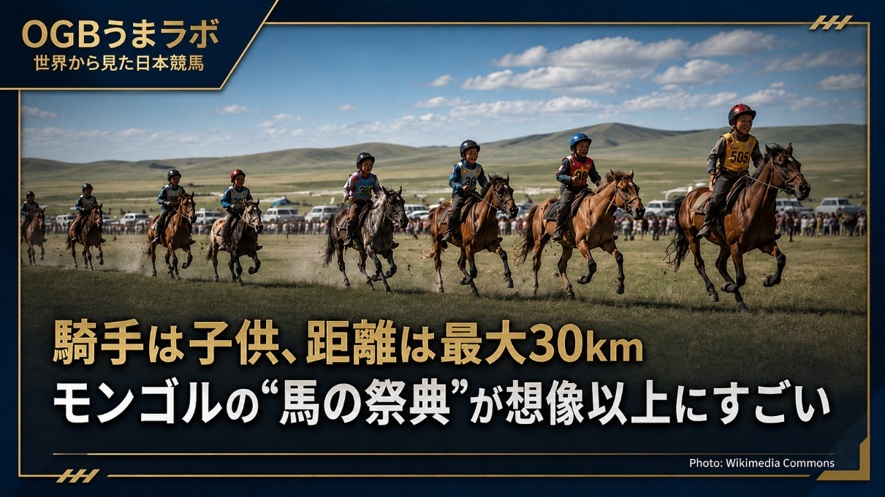

騎手は子供、距離は最大30km
モンゴルの“馬の祭典”が想像以上にすごい
競馬ニュースというより、馬文化の話です。
2026年7月、モンゴルで「World Horse Day Festival」が開催されます。
舞台はウランバートルと、ナーダム競馬の会場として知られるフイ・ドローン・フダグ周辺。
期間は7月10日から15日まで。
公式サイトでは、ナーダム祭、競馬、伝統競技、民俗パフォーマンス、馬の調教師によるショーケースなどが予定されています。
さらに、モンゴル馬で草原を走る体験、遊牧生活や伝統文化に触れるプログラム、馬に関する観光・文化・投資・政策を話し合うWorld Horse Forum、関連企業や団体が集まるExpoやB2B商談も行われる予定です。
つまり、単なる競馬イベントではありません。
馬のレース。
伝統競技。
遊牧文化。
観光。
ビジネス。
国際フォーラム。
それらをまとめた、世界最大級の“馬の祭典”と言ってもよさそうです。
その中でも、日本の競馬ファンが思わず目を止めそうなのが、#モンゴル のナーダム競馬です。
ナーダム競馬は、草原を舞台にした長距離競馬。
距離はおおよそ15kmから30km。
騎乗するのは、7歳から13歳ほどの子供騎手とされています。
競馬場の中を走るレースではなく、広大な草原を馬が駆け抜ける競技です。
ナーダムは、モンゴルにとって単なるスポーツイベントではありません。
競馬、モンゴル相撲、弓術などが行われる、国を代表する伝統行事です。
馬は、モンゴルの生活や文化と深く結びついた存在。
移動手段であり、家畜であり、財産であり、誇りでもあります。
だから #ナーダム競馬 も、単に勝ち負けを競うレースというより、馬と人の関係そのものを祝う祭典に近いものです。
子供騎手。
草原の長距離レース。
伝統競技。
遊牧文化体験。
国際フォーラム。
馬を中心にした観光とビジネス。
同じ“馬のイベント”でも、ここまで広がるのはかなり面白いです。
普段、私たちが見ている競馬は、データ、血統、調教、馬場、展開、オッズを読む競技です。
一方で、世界には、馬文化そのものとして続いてきた競馬もあります。
モンゴルのWorld Horse Day Festivalは、その象徴のような存在かもしれません。
競馬というより、馬の国民的祭典。
こういう世界の競馬を知ると、馬という存在が国によってどれほど違う意味を持つのか、少し見方が変わります。
皆さんはどう見ますか？
モンゴルの草原を走る長距離競馬。
そして、馬を中心に文化・観光・ビジネスまで広げる祭典。
これはもう、競馬というより“馬文化そのもの”と言っていいのかもしれません。
詳細を見たい方は、公式サイトもどうぞ。
※リンクはリプ欄に貼っておきます。
26.6.23
うまラボ編集部